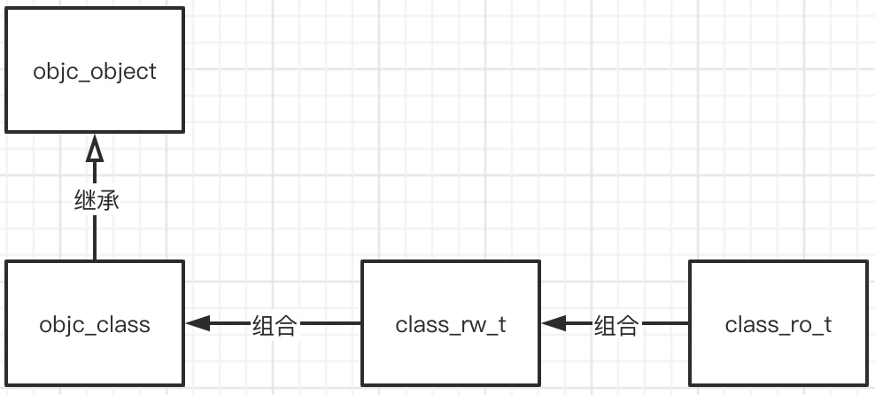

Objective-C 一、对象本质——对象的分类
Tue, Apr 13, 2021
400 Words|Read in about 2 Min|Total Amount of Reading Times
整个OC对象的分类可以分为以下三种：
-
- 实例对象 instance
-
- 类对象 class
-
- 元类对象 meta-class
接下来呢，我要一一开始讨论三类对象，每个对象，都会从内存布局、源码分析等角度切入，然后扩展，说到哪儿算哪儿。
1. 实例对象的内存布局
1.1 NSObject(基类/祖宗)
//最简单的一个实例对象
NSObject *obj = [[NSObject alloc]init];
我们先创建一个NSObject 对象，来看看这个对象里面有什么，这个对象可是祖宗🙂，只要是个对象肯定是继承自NSObject(NSProxy除外)。
//终端输入,通过clang输出重新编译为c++的文件。
//需要指定sdk的版本
//架构 arm64
xcrun -sdk iphoneos clang -arch arm64 -rewrite-objc main.m -o main.cpp
重新编译完后的c++代码有接近4万行，我们只摘取有用的部分
//可以看做是NSObject实例对象的实现，里面只有一个isa指针,而且就是个结构体
struct NSObject_IMPL {
Class isa;
};
//Class的定义
typedef struct objc_class *Class;
//main函数，这个看起来实在是恶心
int main(int argc, const char * argv[]) {
/* @autoreleasepool */ { __AtAutoreleasePool __autoreleasepool;
NSObject *obj = ((NSObject *(*)(id, SEL))(void *)objc_msgSend)((id)((NSObject *(*)(id, SEL))(void *)objc_msgSend)((id)objc_getClass("NSObject"), sel_registerName("alloc")), sel_registerName("init"));
//下面这是修改过的，我删掉了很多强转，可以看出来就是消息转发而已。后面会讲objc_msgSend
NSObject * obj = objc_msgSend(
objc_msgSend(
objc_getClass("NSObject"),
sel_registerName("alloc")),
sel_registerName("init"))
}
return 0;
}
从上面可以看出来，其实NSObject实例对象里面就只有一个isa指针
struct NSObject_IMPL {
Class isa;
};
可以打印一下实例对象占的内存大小。64位下一个指针8个字节。看一下NSObject的对象是不是8个字节就可以了。或者用一个结构体去获取一下。
//第一种方式，看一下实例对象的大小
NSLog(@"%zd",class_getInstanceSize([NSObject class])); //输出8
//第二种方式.
struct PObject{
Class isaa;
};
//打个断点，看一下p->isaa是谁?
//很显然是NSObject类，这也间接证明了，实例对象的isa指向的是对应的类。
struct PObject *p = (__bridge struct PObject *)([[NSObject alloc]init]);
1.2 Person:NSObject
新建Person类，查看Person的内存布局。
@interface Person:NSObject{
int _age;
}
@property (nonatomic, assign) int number;
- (void)test();
@end
void main(){
//这就是一个实例对象
Person *person = [[Person alloc]init]
}
同样编译为C++输出，截取有用部分展示如下
struct NSObject_IMPL {
Class isa;
};
// 可以看到Person_IMPL内就是一个NSObject的结构体和成员变量，而NSObject_IMPL结构体内就一个isa指针
struct Person_IMPL {
struct NSObject_IMPL NSObject_IVARS;
int _age;
int _number;
};
⭐️⭐️⭐️⭐️⭐️综上，实例对象中包含的是成员变量+isa指针，并不包含任何方法.
2. 类对象(Class)的内存布局
Class cls = [NSObject class];
//点开看一下Class的定义发现是一个objc_class的结构体
typedef struct objc_class *Class;
这里可以通过Objc部分源码来查看一下这个objc_class结构体是个啥玩意儿。
内部代码非常混乱，我这里做了删减，只把重点的东西挑出来。
# isa_t
union isa_t {
isa_t() { }
isa_t(uintptr_t value) : bits(value) { }
uintptr_t bits;
}
# objc_object
struct objc_object {
private:
isa_t isa;
}
#objc_class
struct objc_class : objc_object{
Class superclass;
cache_t cache; // 这个是方法调用缓存，内部维护着一个bucket_t结构体的列表
class_data_bits_t bits; // class_rw_t * plus custom rr/alloc flags
class_rw_t *data() const {
return bits.data();
}
}
# class_data_bits_t
struct class_data_bits_t{
class_rw_t* data() const {
return (class_rw_t *)(bits & FAST_DATA_MASK);
}
}
# class_rw_t
struct class_rw_t {
uint32_t flags;//这个flag可以和不同的MASK做与操作得到不同的表达意思，比如可以判断是否是metaclass
class_ro_t *ro;
method_array_t methods(); //方法列表
property_array_t properties(); //属性列表
protocol_array_t protocols(); //协议列表
}
# class_ro_t
struct class_ro_t{
explicit_atomic<const char *> name;//类名
uint32_t instanceSize;// 实例对象的大小
protocol_list_t * baseProtocols; //基础协议
const ivar_list_t * ivars;//成员变量
property_list_t *baseProperties;//基础属性
}
👆就是objc_class的内存布局，简而言之就是一幅图…

⭐️⭐️⭐️⭐️⭐️综上，类对象中存放着以下几个东西：
- isa_t (这个之前是指针，不过现在成了一个共用体，后面会详细解释这个东西)
- superclass指针
- cache_t (方法调用缓存)
- 属性信息
- 对象方法
- 协议：描述信息
- ivar：描述信息
3. 元类对象(meta-class)的内存布局
Class和meta-class的内存布局是一样的，这里就不做过多的展开了。
⭐️⭐️⭐️⭐️⭐️meta-class中存放的东西：
- 类方法
- isa_t
- superclass指针